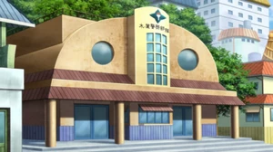

Shinjii UCHIHA
l’Oeil du Crépuscule


Qui est Shinjii Uchiha
Shinjii est un enfant du prestigieux clan Uchiha de Konohagakure. De nature très enfantine, il passe la plupart de ses journées à s’amuser dans la cour de leur domaine, il sort très peu en dehors du domaine du clan parce qu’il préfère l’ambiance de leur clan. Grâce à ces journées, il développa une relation très fusionnelle avec un ami proche. Cependant, au fil des années, cette relation semble se détériorer peu à peu. C'est pourquoi, lorsqu’ils avaient tous deux sept ans, le père de Shinjii décida de ressouder leur lien en les emmenant en voyage près du pays de la pluie. Ce voyage changea malheureusement la vision que Shinjii et son ami avaient de l’inconnu...


"L'art n'est pas beau par son apparence, le véritable art est beau de sens, ainsi reconnaît-on un artiste."
-Shinjii Uchiha

Lors d’un voyage au pays de la pluie, Shinjii et son ami décident d’aller s’aventurer dans un hameau de ce pays. En entrant dans le hameau, ils aperçoivent un enfant accompagné d’un homme à environ 60 mètres d’eux. Curieux, ils décident de s’aventurer plus profondément dans le hameau, mais sont interrompus par trois ninjas qui passent en saut de chakra au-dessus d’eux. Heureusement, Shinjii et son ami ne sont pas repérés par les ninjas. Ils observent les ninjas se rapprocher de l’enfant et de son père. Bien qu'à une certaine distance, ils distinguent clairement qu’un conflit éclate entre l’homme et les trois ninjas. Après 5 minutes interminables pour Shinjii et son ami, ce dernier aperçoit un des ninjas faire un mouvement suspect, comme s’il sortait quelque chose de sa poche. Il alerte Shinjii, qui, de nature très serviable, souhaite intervenir pour aider l’homme en difficulté. Malheureusement, son ami réussit à l’empêcher de se mettre en danger. En se recentrant sur la scène, ils voient l’homme tomber raide au sol, et les ninjas piller les villageois, tuant ceux qui tentaient de résister. Après cette tragédie, ils retournent au campement pour informer le père de Shinjii. La nuit suivante, Shinjii est rongé par un sentiment d’impuissance, tandis que son ami, bien que triste, tente de garder le sourire.

"Ce qu'on risque révèle ce qu'on vaut."
- Shinjii Uchiha


De retour au pays du feu, ils décident de changer les choses. À l’âge de 8 ans, Shinjii et son ami commencent un entraînement intensif à la maîtrise du chakra sous la supervision du père de Shinjii. Au début, ils échouent à maintes reprises, mais après neuf mois d’efforts acharnés, ils se montrent doués dans la maîtrise du ninjutsu de feu, le "Katon", une capacité innée chez le clan Uchiha. Lors d'un entraînement près de cascades, ils développent la faculté rare de mélanger les éléments de l’eau "Suiton" et de l’air "Futon", donnant naissance au Kekkei Genkai de glace, nommé "Hyoton". Cet événement renforce leur lien, car en plus de partager leur amitié, ils partagent maintenant un héritage unique à travers leur nature de chakra et leur Kekkei Genkai.
Après deux ans, arrive le jour de l'examen qui déterminera s'ils sont prêts à quitter l'académie. La veille, alors que Shinjii est stressé par la situation, il met son ego de côté et demande de l’aide à son ami pour les révisions. Ensemble, ils passent la nuit à réviser. Bien qu'épuisés le jour de l’examen, ils sont prêts à se surpasser.

"La parole entraîne, l'exemple enseigne."
- Shinjii Uchiha
III-"La Famille Uchiha"

Le clan Uchiha est un des deux prestigieux clan fondateur du village de Konohagakure. Ce clan occupe une place centrale au sein du village malgré que le domaine du clan soit le domaine le plus excentré du palais du maître Hokage. Le clan Uchiha est un clan plus que jamais redouté pour leurs capacités au combat. Également ils sont réputés pour leurs fameuses pupilles écarlates : “Le Sharingan”, qui certes aident au combat, mais se développent à la suite de tragiques événements. Le clan Uchiha peut susciter admiration de la part d’autrui mais généralement, il évoque la terreur. Malgré tout cela, le clan est grandement défini par la puissance de leurs émotions qui, lorsqu'un Uchiha subit un choc mental, peut irriter la pupille des membres du clan, créant la manifestation du Sharingan”.
"Mes yeux sont une malédiction, ceux qui croiseront mon regard seront maudits"
-Shinjii Uchiha

Objectif 1 (long terme) :
Shinjii souhaite également protéger son maître Hokage, symbole de la prospérité du village de Konohagakure. C’est pourquoi il aspire à créer une garde rapprochée pour escorter l’Hokage lors de ses déplacements, et devenir l’un de ses bras armés. Il souhaite aussi intégrer le haut commandement de Konoha, afin de prouver que le clan Uchiha abrite dorénavant des ninjas fidèles au village, avec des convictions fortes. Ainsi, il désire redorer l’image de son clan au sein de Konoha.

Objectif 2 (Moyen terme) :
De nature très loyale, Shinjii nourrit une haine envers les traîtres de Konoha. C'est pour cela qu'il souhaite créer une unité spéciale dédiée à traquer les traîtres du village.

Objectif 3 (Court terme) :
Au cours de sa vie de ninja, Shinjii veut rendre fier son père. Pour cela, il aspire à intégrer les forces de police de Konoha. Il souhaite également aider les villageois dans leurs tâches quotidiennes et participer à la reconstruction du village lors d’incidents.



Katon

Hyôton

Dôjutsu
Le Katon est la nature de chakra phare du clan Uchiha, et Shinjii n'est pas différent sur ce point-là. Il maîtrise le Katon comme la plupart des membres de son clan, et il sera capable de créer des murs de feu dès son plus jeune âge.
Shinjii maîtrise également le Hyoton, l'art de manipuler la glace, qui combine le Suiton et le Futon. Cela lui permet de mélanger le feu du Katon avec la glace de son Hyoton pour déstabiliser ses adversaires.
Les membres du clan Uchiha sont généralement décrits par une même caractéristique : leur don héréditaire, un des dôjutsus les plus redoutés du monde Shinobi, le Sharingan. Shinjii n'échappe pas à la règle, et ce pouvoir hérité coule également dans ses veines, convoité par beaucoup.

-Taille :
Shinjii : 1m54
-Poids :
Shinjii : 50 kilos
-Corupulence :
musculature moyenne
-Cheveux :
Cheveux noir
-Caractères :
Shinjii est une personne qui aime la vie. Son but est de partager sa joie de vivre, bien qu’il reste très méfiant envers les autres. Il ne fait confiance qu'à lui-même et à ses proches.

Qualités Shinjii
- Joyeux
- prêt à partager
- Aidant
- intelligent
- Fidèle

Défautls Shinjii
- Condescendant
- Méfiant
- Anxieux
- ne pardonne pas
Merci de m'avoir lu !